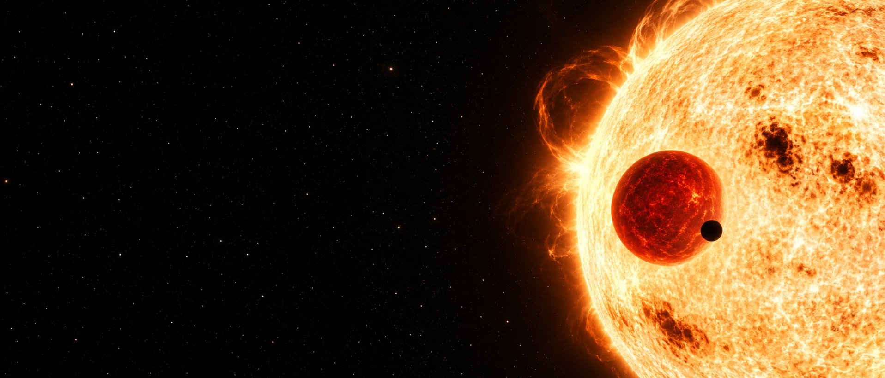
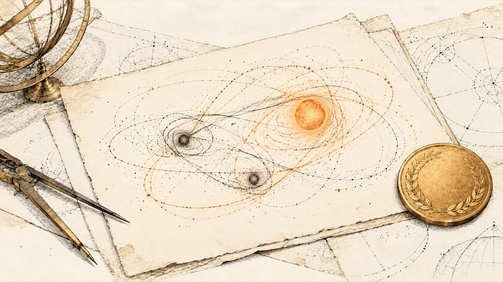

Задача трьох тіл
Коли гравітація грає в хаос
Якщо два небесні тіла завзято притягують одне одного, їхній танець цілком передбачуваний — ще 1687 року Ньютон розклав усе по поличках своїми формулами. Але варто запросити до цієї компанії третє тіло, як математична ідилія миттєво руйнується. У цій статті ми розберемося, чому так відбувається, що вченим усе ж вдалося відшукати за три століття і як космічним апаратам вдається жити в цьому гравітаційному хаосі. До речі, орбіти на цій сторінці ніхто не малював вручну — вони розраховуються прямо у вашому браузері за законом всесвітнього тяжіння.
01Чому поява третього гравця все руйнує
Коли у нас є лише два тіла, складну задачу можна граціозно звести до однієї: кожне з них просто мандрує навколо спільного центру мас по еліпсу, параболі або гіперболі. Наприкінці отримуємо чітку формулу, яка дозволяє дізнатися положення об'єктів хоч через рік, хоч через мільйон років.
Щойно з'являється третій учасник, ситуація кардинально змінюється: кожне тіло відчуває притягання двох інших, а ці сили невпинно змінюються щомиті. Універсальної формули через звичні математичні функції, яка б видала точне положення системи в довільний момент часу, просто не існує. Генріх Брунс та Анрі Пуанкаре наприкінці XIX століття довели: стандартні спроби відшукати таке рішення через додаткові закони збереження тут безсилі.
Проте це зовсім не означає, що рух неможливо вирахувати. На допомогу приходять комп'ютери, які діють методично, крок за кроком: фіксують поточні позиції та швидкості тіл, обчислюють сили, зсувають об'єкти на крихітний часовий відрізок і знову повторюють цикл. Саме за цим алгоритмом і працює симуляція нижче.
Пастка. Сприймати слово «нерозв'язна» як «абсолютно непередбачувана». Насправді йдеться лише про відсутність єдиної загальної формули. Чисельними методами траєкторії обчислюють дуже точно, а для особливих початкових умов давно знайдені точні розв'язки.
02Симуляція
Оберіть сценарій до душі. Тіла тут рухаються згідно із законом всесвітнього тяжіння в умовних одиницях, де маси й гравітаційна стала підібрані як зручні числа. Лічильник під сценою показує зміну повної енергії системи: в ідеалі вона має залишатися сталою, тож будь-які коливання сигналізують про похибку обчислень. Якщо цей показник стрімко зростає, довіряти симуляції вже не варто.
Колір і розмір зорі в «Космосі» залежать від маси, як у справжніх зір: однакові маси — однакові жовті зорі; коли маси різні, найважча біло-блакитна й найбільша, найлегша червона й найменша. У «Кресленні» кольори лише розрізняють тіла. Сцену можна обертати мишею, колесо — масштаб.
Пастка. Сліпо вірити симуляції без запобіжників. У моменти найтісніших зближень тіла стрімко розганяються, і грубий крок обчислень дає хибний результат. Тому тут крок часу автоматично зменшується, коли тіла близько, а похибка енергії завжди перед очима.
03Хаос: коли вирішує мільярдна частка
Уявімо експеримент: запускаємо дві ідентичні симуляції, які відрізняються лише тим, що одне з тіл у другій системі зміщене на одну мільярдну. Спочатку обидві картини рухаються синхронно. Проте згодом розбіжність лавиноподібно наростає — і невдовзі траєкторії стають геть різними.
Графік показує відстань між копіями в логарифмічному масштабі. Пряма лінія, що злітає вгору, означає, що різниця множиться в однакову кількість разів за рівні проміжки часу. Це і є хаос: рух повністю визначений законами, але передбачити його надовго неможливо, бо будь-яка неточність початкових даних росте.
Саме цю властивість відкрив Анрі Пуанкаре, намагаючись довести стійкість Сонячної системи. Згодом подібна поведінка отримає назву ефекту метелика.
Пастка. Сподіватися, що потужніший комп'ютер раз і назавжди вирішить проблему. Подвоєння точності обчислень лише трохи відсуває момент, коли копії розійдуться: похибка зростає експоненційно, а точність додається лінійно.
04Карта розв'язків
Задача трьох тіл — це не одна ізольована головоломка, а ціле сімейство задач. Схема показує, як воно розгалужується: від задачі двох тіл, де все зрозуміло, до спрощеної «обмеженої» моделі з легким третім тілом, особливих періодичних орбіт і реальних систем у космосі. Наведіть курсор на блок, щоб побачити зв'язки, або запустіть історію кнопкою ▶.
Що означає кожен блок — написано під схемою, згруповано за колонками: читати можна без кліків.
05Точки Лагранжа
Спростимо умову: два масивні тіла рухаються коловими орбітами одне навколо одного, а третє настільки легке, що ніяк не впливає на їхній рух. Це обмежена задача трьох тіл. У системі відліку, що обертається разом із важкими тілами, існує рівно п'ять місць, де тяжіння і відцентрова сила повністю врівноважуються. Це і є точки Лагранжа.
Три з них — L1, L2 та L3 — розташовані на прямій, що з'єднує важкі тіла, і нестійкі: апаратам у цих точках доводиться регулярно вмикати двигуни для корекції. Дві інші — L4 та L5 — утворюють рівносторонні трикутники з масивними тілами і стійкі, якщо одне з них значно важче за інше.
Карта показує «рельєф» ефективного потенціалу в системі, що обертається. L1, L2 і L3 — це перевали між ямами, L4 і L5 — вершини. Дивно, але саме вершини стійкі: тіло, що з них зісковзує, сила Коріоліса заводить на петлю навколо точки. Посуньте повзунок співвідношення мас і подивіться, як точки зсуваються; наведіть на точку, щоб прочитати, що там відбувається.
Світле кільце — «хребет», на якому лежать L4 і L5. Темне — ями навколо двох тіл і схил назовні, куди в системі, що обертається, тіло зісковзує. Смуги — лінії однакового рівня.
Сцену можна обертати мишею, колесо — масштаб. У куті — та сама система на карті зверху; клік відкриває її великою. Повзунок μ змінює співвідношення мас: точки зсуваються, а в системі Сонце — Юпітер видно, як за μ більше 0,0385 троянці розбігаються з L4 і L5.
У системі Сонце — Земля точка L1 стала домівкою для сонячної обсерваторії SOHO, у точці L2 працює космічний телескоп «Джеймс Вебб» (а до 2025 року там працювала й обсерваторія Gaia). Тим часом у точках L4 та L5 орбіти Юпітера скупчилися тисячі астероїдів-троянців, дослідити які вирушила місія NASA Lucy.
Пастка. Уявляти точку Лагранжа як нерухому крапку в космосі, де апарат просто зависає. Насправді вона обертається разом із системою, а апарати в L1 чи L2 літають навколо неї великими гало-орбітами.
06Історія
- 1687
Ісаак Ньютон у «Началах» розв'язує задачу двох тіл і робить сміливу спробу підкорити три: Сонце, Землю й Місяць. За переказами, саме теорія руху Місяця була єдиною задачею, від якої в нього боліла голова.
- 1767
Леонард Ейлер знаходить конфігурації, де всі три тіла постійно лишаються на одній прямій.
- 1772
Жозеф-Луї Лагранж знаходить свій знаменитий трикутний розв'язок.
- 1887
Генріх Брунс доводить, що нових алгебраїчних законів збереження, які допомогли б знайти формулу, немає.
- 1885–1890
Король Швеції Оскар II започатковує премію за розв'язок задачі багатьох тіл. У журі — Міттаг-Леффлер, Вейєрштрасс та Ерміт. 21 січня 1889 року золоту медаль і 2500 крон присуджують Анрі Пуанкаре. Під час підготовки праці до друку редактор Едвард Фрагмен ставить уточнювальні запитання, і, відповідаючи на них, Пуанкаре знаходить у власних міркуваннях серйозну помилку. 30 листопада 1889 року він телеграфує з проханням зупинити друк. Частину тиражу журналу вже розіслано, тож його відкликають; передрук автор оплачує з власної кишені — понад 3500 крон, більше за саму премію. Виправлена праця виходить у грудні 1890 року, і саме в ній уперше з'являються зачатки майбутньої теорії хаосу.
- 1912
Карл Зундман доводить, що розв'язок задачі можна подати у вигляді нескінченного ряду. Але 1930 року Давид Белоріський підраховує: для практичної точності знадобилося б понад 108 000 000 членів цього ряду.
- 1967
Віктор Себехей і Фредерік Пітерс за допомогою комп'ютера доводять піфагорову задачу до фіналу.
- 1993–2000
«Вісімка»: Кріс Мур знаходить траєкторію чисельно, а Шенсінер і Монтгомері дають їй строге доведення.
- 2008
Лю Цисінь публікує науково-фантастичний роман «Задача трьох тіл», де цивілізація з планети в потрійній зоряній системі виживає в умовах непередбачуваного клімату. До речі, у найближчій до нас зоряній системі Альфа Центавра справді три зорі.
- 2013
Мілован Шуваков та Велько Дмітрашинович відкривають одразу 13 нових сімейств періодичних орбіт для трьох однакових мас.
- 2017 і далі
Сяомін Лі, Шиджун Ляо та їхні колеги з допомогою суперкомп'ютерів знаходять сотні, а згодом і тисячі нових періодичних орбіт.

07Що відомо сьогодні
Універсальної формули через звичні функції для задачі трьох тіл не існує: Брунс і Пуанкаре показали, що бракує необхідних законів збереження. Ряд Зундмана формально є загальним розв'язком, проте на практиці непридатний через неймовірно повільну збіжність. Сьогодні ми маємо окремі точні розв'язки та тисячі періодичних орбіт, знайдених комп'ютерами. Найчастіше доля системи трьох тіл однакова: пара об'єктів залишається разом, а третій відлітає у відкритий космос. Стійкі конфігурації — рідкісні острівці в океані хаосу.
Для потреб астронавтики цього цілком досить. Траєкторії міжпланетних апаратів розраховують чисельно з великою точністю на потрібний час, а гравітаційні маневри, як у місій «Вояджер», спираються саме на взаємодію трьох тіл — апарата, планети та Сонця.
Пастка. Мислити за принципом «задачу не розв'язано, отже, ми нічого не знаємо». Ми розуміємо, чому формули немає, вміємо прораховувати рух на практиці й маємо великі каталоги розв'язків. Нерозв'язною задача є лише в одному, дуже вузькому сенсі.
Продовження про гравітацію в кіно — стаття «Фізика „Інтерстеллара“»: чорна діра Гаргантюа, сповільнення часу і червоточина.
Джерела
- Wikipedia — Three-body problem: Ейлер, Лагранж, Брунс, Зундман і Белоріський, вісімка, піфагорова задача, каталоги орбіт
- Institut Mittag-Leffler — Prize Competition: премія короля Оскара II і помилка Пуанкаре
- A. Chenciner, R. Montgomery — A remarkable periodic solution of the three-body problem (2000)
- M. Šuvakov, V. Dmitrašinović — Three classes of Newtonian three-body planar periodic orbits (2013)
- ESA — Gaia і NASA — James Webb Space Telescope: апарати в точці L2
- Solar System Scope — текстури планет (CC BY 4.0)
- NASA — Lucy: троянські астероїди Юпітера
- Текст відредаговано з допомогою Gemini, факти звірено з джерелами вище.